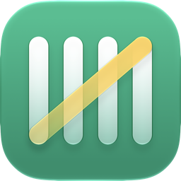

BookyTus compras con Apple Pay, anotadas solas
Booky es una app para iPhone que registra cada compra que haces con Apple Pay sin que escribas nada: la toma del toque de tu tarjeta o del aviso de Wallet, la clasifica y la compara con tus presupuestos del mes. Tus compras se guardan en tu iPhone y en tu iCloud; Booky no tiene cuentas propias ni se conecta a tu banco.
- Captura automática. Dos automatizaciones de Atajos, que configuras una sola vez en dos pasos (añadir el atajo y encender las dos automatizaciones; el permiso de los avisos de Booky se pide aparte, al empezar), pasan a Booky tus pagos: el toque de la tarjeta en tienda y el aviso de Wallet, que cubre también las compras en línea, incluso con el iPhone bloqueado.
- Presupuestos por categoría, gratis y sin tope, y la pestaña Mi mes con lo del mes.
- Google Sheets. Si lo conectas, Booky crea una hoja en tu Google Drive y escribe ahí cada compra y cada cambio.
- Dividir y cobrar. Reparte una cuenta entre amigos, a partes iguales o con montos a mano, y envía a cada uno lo suyo por WhatsApp con tus datos para que te paguen.
Requiere iPhone con iOS 27 o posterior. Booky no es un banco ni mueve dinero: solo anota.
¿Te llegó un cobro por WhatsApp?
Si el mensaje de un amigo termina en «Dividido con Booky» (o «Split with Booky», si su iPhone está en inglés), usó la app para calcular tu parte de una cuenta y armar el mensaje; lo envió él, desde su WhatsApp. Booky no te cobra ni mueve dinero, y tú no necesitas la app. Si reconoces el cobro, págale a tu amigo por los medios que puso en el mensaje; si no lo reconoces, no pagues y pregúntale a quien te lo mandó. Booky no tiene servidores: tu nombre y tu número solo los guarda tu amigo, en su iPhone y en su iCloud.
Únete a la beta
Booky está en beta pública en TestFlight, la app de Apple para probar apps antes de que salgan. Es gratis y, durante la beta, Booky Pro viene desbloqueado.
- Instala TestFlight, la app de Apple, desde la App Store.
- Abre el enlace de la beta en tu iPhone y sigue los pasos de TestFlight.
- Abre Booky y, en Hoy, toca «Configura Apple Pay» (o, en Ajustes, «Configurar»): son dos pasos, una sola vez.
Lo que necesitas
- Un iPhone: Booky es solo para iPhone.
Qué incluye la beta
La captura automática de Apple Pay (iOS 27), anotar compras a mano, categorías y presupuestos, Mi mes, Buscar (la lupa), los widgets, varias monedas, dividir y cobrar por WhatsApp, Google Sheets, la copia en iCloud y exportar CSV, en español y en inglés. Todavía no están: la lectura de tickets (la foto del ticket sí se guarda con la compra) e importar CSV (exportar sí).
Cómo mandar comentarios
- Haz una captura de pantalla dentro de Booky, toca la miniatura y elige compartir los comentarios de la beta de TestFlight. Llega sin tu nombre: si quieres que te respondamos, escribe tu correo en el campo de correo de TestFlight, que es opcional. La captura muestra todo lo que haya en pantalla, como montos o comercios.
- O escríbenos desde la app: Ajustes → «Escríbenos» (también «Sugerir una idea» y «Enviar un comentario»). La respuesta llega a Ajustes → «Mis mensajes», sin correo de por medio.
Qué datos llegan con un comentario y para qué se usan, en la política de privacidad.
Your Apple Pay purchases, logged by themselves
Booky is an iPhone app that logs every purchase you make with Apple Pay without typing: it takes it from the tap of your card or from the Wallet alert, categorizes the purchase and checks it against your monthly budgets. Your purchases are stored on your iPhone and in your iCloud; Booky has no accounts of its own and doesn't connect to your bank.
- Automatic capture. Two Shortcuts automations, which you set up once in two steps (add the shortcut and turn on both automations; Booky's notification permission is asked separately, when you start), hand your payments to Booky: the tap of your card in a store and the Wallet alert, which also covers online purchases, even while the iPhone is locked.
- Budgets per category, free and uncapped, and a My month tab for the month.
- Google Sheets. If you connect it, Booky creates a spreadsheet in your Google Drive and writes every purchase and change there.
- Split and collect. Split a bill among friends, in equal parts or with amounts you type, and send each person their share over WhatsApp with your payment details.
Requires an iPhone running iOS 27 or later. Booky is not a bank and moves no money: it only keeps the record.
Did you get a payment request on WhatsApp?
If a friend's message ends with "Split with Booky" (or "Dividido con Booky", if their iPhone is in Spanish), they used the app to work out your share of a bill and write the message; they sent it themselves, from their own WhatsApp. Booky doesn't charge you or move any money, and you don't need the app. If you recognize the request, pay your friend using the details they put in the message; if you don't, don't pay, and ask whoever sent it. Booky has no servers: your name and number are kept only by your friend, on their iPhone and in their iCloud.
Join the beta
Booky is in a public beta on TestFlight, Apple's app for trying apps before they are released. It's free, and Booky Pro comes unlocked during the beta.
- Install TestFlight, Apple's app, from the App Store.
- Open the beta link on your iPhone and follow TestFlight's steps.
- Open Booky and, on Today, tap "Set up Apple Pay" (or, in Settings, "Set up"): two steps, just once.
What you need
- An iPhone: Booky is iPhone only.
What the beta includes
Automatic Apple Pay capture (iOS 27), adding purchases by hand, categories and budgets, My month, Search (the magnifier), the widgets, multiple currencies, split and collect over WhatsApp, Google Sheets, the iCloud backup and CSV export, in Spanish and English. Not here yet: receipt reading (the receipt photo is still saved with the purchase) and CSV import (export is there).
How to send feedback
- Take a screenshot inside Booky, tap the thumbnail and choose to share beta feedback through TestFlight. It arrives without your name: if you want a reply, enter your email in TestFlight's email field, which is optional. The screenshot shows everything on screen, such as amounts or merchants.
- Or write to us from the app: Settings → “Write to us” (also “Suggest an idea” and “Send a comment”). The reply arrives in Settings → “My messages”, with no email involved.
What data comes with a comment and what it is used for is in the privacy policy.
Soporte / Support
Escríbenos desde la app: Ajustes → «Escríbenos». / Write to us from the app: Settings → “Write to us”.
Sin la app / Without the app: roesvx@gmail.com
Política de privacidad / Privacy Policy
Preguntas frecuentes
¿Por qué Booky necesita iOS 27?
Porque la captura automática se apoya en la automatización «Notificación» de Atajos con Wallet, que llegó con iOS 27, y Booky está hecho alrededor de ella. En un iPhone con una versión anterior no se puede instalar. La captura automática es solo para iPhone.
Pagué con Apple Pay y la compra no entró sola. ¿Qué reviso?
- Abre Ajustes → Registro de capturas. Cada vez que la automatización llama a Booky queda una línea, también si falla. Si hay una línea gris del momento del pago («No parece una compra (sin monto)» o «Toque sin monto»), la automatización sí corrió, pero el aviso o el toque no trajo un monto, o Booky no encontró el monto o el comercio en el aviso. Si la línea dice «Monto vacío o inválido…» (roja si vino del aviso, gris si vino del toque), el monto llegó en un formato que Booky no entendió. En todos los casos, anota la compra con el «+» y cuéntanos qué dice la línea.
- Si no hay ninguna línea de ese momento, la automatización no corrió. Abre Atajos, en la pestaña Automatización, y comprueba que las dos automatizaciones que abren «Booky - Apple Pay» sigan encendidas. Si alguna está apagada, en Ajustes → «Configurar» toca «Reintentar» en el paso 2 (encender las automatizaciones); si ya no está, en el paso 1 (añadir el atajo).
- Las compras en línea solo entran por el aviso de Wallet: si tu banco no lo manda, esas no llegan. Los pagos en tienda, con el iPhone o el reloj, entran por el toque de la tarjeta (con el atajo de Booky) aunque no haya aviso.
¿Booky ve mi banco?
No. Booky no se conecta a tu banco. Solo recibe lo que Atajos le pasa: el título, el subtítulo y el texto de cada aviso de Wallet y, de cada toque de una tarjeta o un pase, el comercio, el monto, la moneda, la tarjeta o el pase y el campo «nombre» de la transacción. Tus compras viven en tu iPhone y en tu iCloud, nunca en un servidor de Booky.
Cuando termine la beta, ¿qué será de Booky Pro?
Hoy, en el código de Booky, solo tres cosas son de Pro: Google Sheets en vivo, el aviso el día antes de cada pago fijo y el recordatorio para cobrar a quien te debe. Todo lo demás (la captura automática, anotar a mano, las categorías, los presupuestos, que son gratis y sin tope, los widgets, dividir y cobrar, exportar el CSV y la copia en iCloud) no tiene tope. Durante la beta todo viene desbloqueado y no hay nada que pagar. Esta es la lista de hoy: puede cambiar antes de que Booky salga en la App Store.
¿Mis datos de la beta pasan a la versión de la App Store?
Sí. La beta de TestFlight y la versión de la tienda son la misma app (el mismo identificador, sv.escobar.booky) y usan la misma base de iCloud (el contenedor de producción), así que tus compras, presupuestos y repartos siguen en tu iCloud, con el mismo Apple ID y la copia en iCloud activa. La versión de la tienda aún no sale, así que no lo hemos probado de punta a punta; si quieres una copia tuya antes, usa Ajustes → Exportar CSV (lleva tus compras y repartos, no los presupuestos ni las fotos).
Frequently asked questions
Why does Booky need iOS 27?
Because automatic capture relies on the Shortcuts "Notification" automation with Wallet, which arrived with iOS 27, and Booky is built around it. It can't be installed on an iPhone with an earlier version. Automatic capture is iPhone only.
I paid with Apple Pay and the purchase didn't come in by itself. What do I check?
- Open Settings → Capture log. Every time the automation calls Booky, a line is left there, even when it fails. If there is a gray line from the time of the payment ("Doesn't look like a purchase (no amount)" or "Tap with no amount"), the automation did run, but the alert or the tap carried no amount, or Booky couldn't find the amount or the merchant in the alert. If the line says "Empty or invalid amount…" (red if it came from the alert, gray if it came from the tap), the amount arrived in a format Booky didn't understand. In every case, add the purchase with the + and tell us what the line says.
- If there is no line from that moment, the automation didn't run. Open Shortcuts, on the Automation tab, and check that both automations that run "Booky - Apple Pay" are still on. If one is off, go to Settings → “Set up” and tap “Retry” on step 2 (turn the automations on); if it's gone, on step 1 (add the shortcut).
- Online purchases only come in through the Wallet alert: if your bank doesn't send it, those don't arrive. In-store payments, with the iPhone or the watch, come in through the tap of the card (with Booky's shortcut) even when there is no alert.
Does Booky see my bank?
No. Booky doesn't connect to your bank. It only receives what Shortcuts hands it: the title, subtitle and text of each Wallet alert and, for each tap of a card or pass, the merchant, the amount, the currency, the card or pass and the transaction's "name" field. Your purchases live on your iPhone and in your iCloud, never on a Booky server.
After the beta, what will Booky Pro be?
Today, in Booky's code, only three things are Pro: live Google Sheets, the alert the day before each fixed payment and the reminder to collect from whoever owes you. Everything else (automatic capture, adding purchases by hand, categories, budgets, which are free and uncapped, the widgets, split and collect, CSV export and the iCloud backup) has no cap. During the beta everything is unlocked and there is nothing to pay. This is today's list: it may change before Booky reaches the App Store.
Does my beta data carry over to the App Store version?
Yes. The TestFlight beta and the store version are the same app (the same identifier, sv.escobar.booky) and use the same iCloud database (the production container), so your purchases, budgets and splits stay in your iCloud, as long as you use the same Apple ID and the iCloud backup is on. The store version isn't out yet, so we haven't tested it end to end; if you want a copy of your own first, use Settings → Export CSV (it has your purchases and splits, not budgets or photos).